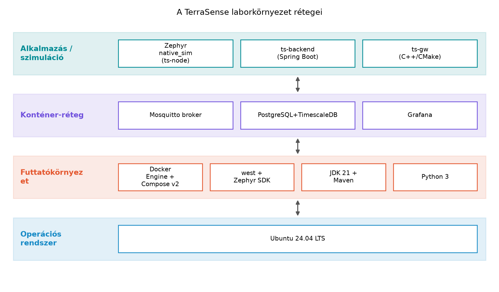

A TerraSense rendszer minden rétegét – eszköz, gateway, broker, backend, adatbázis, megjelenítés – olyan laborban fogjuk fejleszteni, amelyben nincs szükség valódi szenzorra vagy mikrovezérlőre. Ez két dolgot követel: a labor legyen reprodukálható, és az egyes eszközök helyettesíthetők legyenek konténerben vagy natív szimulációban futó megfelelőikkel. Ebben az alfejezetben felállítjuk a közös laborkörnyezetet Ubuntu 24.04-en, és minden komponenst egy-egy füstteszttel ellenőrzünk. Aki ezt egyszer végigcsinálja, a későbbi fejezetek laborjai azonnal futtathatók lesznek.
A fejezet „Várt kimenet” blokkjai illusztratívak: a tényleges kimenet a telepített verzióktól és a host állapotától függ. A futtatott ellenőrzéseket a labor végén a füsttesztek adják.
A labor négy fő pillére:
ts-node firmware-jének fejlesztéséhez és a
native_sim boardon való szimulációjához.
A host gép egyetlen erős munkaállomás is lehet: a Zephyr
native_sim a host CPU-ján, a konténerek pedig a Docker
hálózatán futnak, így a teljes rendszer egyetlen számítógépen is
tesztelhető.
Miért Docker a brokerhez és a későbbi
szolgáltatásokhoz? A Mosquitto, a TimescaleDB és a Grafana
telepítése és verziókezelése natívan törékeny lenne. A Docker Compose
deklaratív módon írja le a szolgáltatásokat, a verziók pedig a
compose.yaml-ben rögzíthetők. A konténerek ráadásul
izolálják a labor által használt portokat és köteteket. A takarítás nem
egyetlen parancs: a docker compose stop leállítja a
konténereket, de megtartja a köteteket; a
docker compose down eltávolítja a konténereket és a
hálózatot, a named volume-okat viszont megtartja; a
docker compose down -v a named volume-okat is törli, a bind
mountolt hostfájlokat viszont nem. A labor alapértelmezett leállítása a
stop; a down -v csak biztonsági mentés után,
teljes újrakezdéshez használható.
| Parancs | Konténer | Hálózat | Named volume | Bind mount |
|---|---|---|---|---|
docker compose stop |
leállítja | megtartja | megtartja | megtartja |
docker compose down |
eltávolítja | eltávolítja | megtartja | megtartja |
docker compose down -v |
eltávolítja | eltávolítja | törli | megtartja (a hostfájlokat nem érinti) |
Miért native_sim a Zephyr célnak? A
Zephyr hivatalosan támogatja a natív szimulációt, amely a firmware-t a
host processzeként futtatja. Ez nem hardverhű időzítést és
energiafogyasztást ad, de a szálkezelés, a protokollkód és a logika
tesztelésére kiváló. A valós hardveres kiegészítés opcionális, és az Opcionális valós hardver alfejezetben jelenik
meg.
Miért Java 21 és Maven? A Spring Boot 3.x-hez Java 17 vagy újabb kell; a 21 hosszú távú támogatást élvez. A Maven pedig a Spring Boot projektek leggyakoribb build-eszköze, és a C++-os CMake-hez hasonló, deklaratív életciklust ad.
Miért Python 3? A laborban kisebb segédszkripteket (például adatszimuláció, üzenetgenerálás) Pythonban írunk, mert gyorsan fejleszthető és a JSON/SenML kezelése is egyszerű.
Globális elnevezési konvenciók
~/iot-labor/.~/iot-labor/iNNN/.~/iot-labor/stack/compose.yaml.ts-
vagy lab- előtagú.Továbbvitt eredmény. Az itt létrehozott
~/iot-labor/ könyvtárszerkezetet és a
stack/compose.yaml vázat használja az Miért RTOS? A Zephyr felépítése és az első
alkalmazás, az MQTT a gyakorlatban:
Zephyr-kliens és Mosquitto, a A ts-gw
szolgáltatás C++-ban: protokollfordítás MQTT-re, a A ts-backend váza: REST API és egészségellenőrzés
és a Záróprojekt: a teljes TerraSense rendszer
összeállítása és átvétele alfejezet.
Munkakönyvtár:
mkdir -p ~/iot-labor/i004 && cd ~/iot-labor/i004Ubuntu 24.04-en a git általában már telepítve van, de a
laborkörnyezet miatt frissítjük a csomaglistát, és telepítjük az
alapvető eszközöket.
sudo apt-get update
sudo apt-get install -y git curl wget ca-certificates gnupg xz-utils \
build-essential gcc g++ make cmake ninja-build gperf \
gcc-multilib g++-multilib libc6-dev-i386 file \
device-tree-compiler python3 python3-pip python3-venv python3-dev
git --version
cmake --version
ninja --version
python3 --versionVárt kimenet: például git version 2.43.0 és
Python 3.12.3 (a pontos verzió a telepített csomagoktól
függ).
A gcc-multilib, a g++-multilib és a
libc6-dev-i386 a 32 bites native_sim buildhez
szükséges; a gnupg a Docker repository kulcsának
fogadásához, az xz-utils pedig a Zephyr SDK
.tar.xz kicsomagolásához kell. A Zephyr Python-függőségeit
nem a rendszer-Pythonba, hanem a 4. szakaszban létrehozott virtuális
környezetbe telepítjük a zephyr/scripts/requirements.txt
fájlból.
A labor támogatott hostja Ubuntu 24.04 x86_64 (amd64). A hivatalos
Docker repository noble stable csatornáját használjuk; a
deb sor arch=amd64 értéke ezt a támogatott
architektúrát rögzíti. ARM64 hoston a repository sora és a Zephyr SDK
URL-je is eltér, ezt a kézirat nem támogatja. Először ellenőrizze a host
architektúráját; a várt kimenet amd64:
dpkg --print-architectureA kulcs és a repository hozzáadása után telepítjük a
docker-ce csomagokat:
sudo install -m 0755 -d /etc/apt/keyrings
curl -fsSL https://download.docker.com/linux/ubuntu/gpg | \
sudo gpg --dearmor -o /etc/apt/keyrings/docker.gpg
echo \
"deb [arch=amd64 signed-by=/etc/apt/keyrings/docker.gpg] \
https://download.docker.com/linux/ubuntu noble stable" | \
sudo tee /etc/apt/sources.list.d/docker.list > /dev/null
sudo apt-get update
sudo apt-get install -y docker-ce docker-ce-cli containerd.io \
docker-buildx-plugin docker-compose-pluginA repository a verziómátrixban rögzített főverziót szolgálja; a
telepítés után a docker --version és a
docker compose version kimenetét a verziómátrixszal kell
összevetni, és eltérés esetén a mátrixot kell frissíteni.
Ezután a felhasználót a docker csoportba tehetjük, hogy
sudo nélkül is futtathassunk konténereket. A csoporttagság
kényelmi, de nagy jogosultságú hozzáférés: a szokásos root daemonhoz
hozzáférő docker csoport gyakorlatilag root szintű
jogosultságot ad, ezért csak megbízható laborhoston használható.
Biztonságosabb alternatíva a rootless Docker; a sudo docker
nem biztonságosabb, mert a parancsot root joggal futtatja, és a konténer
felhasználóját önmagában nem változtatja meg.
sudo usermod -aG docker $USER
newgrp dockerEllenőrzés:
docker --version
docker compose versionVárt kimenet: a Docker Engine és a Compose v2 verziószáma, például
Docker version 27.x és
Docker Compose version v2.x.
Ellenőrzési igény. Az Ubuntu 24.04 kódneve
noble; ha a Docker repository URL-je megváltozik, akkor a fentidebsor kiigazítása szükséges. A pontos Docker-verziók a telepítés időpontjától függenek.
Létrehozzuk a labor gyökérkönyvtárát, a közös stack
mappát és a scripts segédkönyvtárat:
mkdir -p ~/iot-labor/stack ~/iot-labor/scriptsMost létrehozzuk a ~/iot-labor/stack/compose.yaml vázat,
amely egyelőre csak a Mosquitto broker szolgáltatást tartalmazza. Ez a
fájl a későbbi alfejezetekben bővül a backend és az adatbázis
szolgáltatásokkal.
# ~/iot-labor/stack/compose.yaml
# Közös Docker Compose váz a TerraSense laborhoz.
# A későbbi alfejezetek további szolgáltatásokat adnak hozzá.
services:
lab-broker:
image: eclipse-mosquitto:2.0.18
container_name: lab-broker
ports:
- "127.0.0.1:1883:1883"
volumes:
- ./mosquitto/mosquitto.conf:/mosquitto/config/mosquitto.conf:ro
healthcheck:
test: ["CMD", "mosquitto_sub", "-t", "$$SYS/#", "-C", "1", "-W", "1"]
interval: 10s
timeout: 3s
retries: 5A compose váz egy lab-broker nevű szolgáltatást
definiál, amely az eclipse-mosquitto:2.0.18 image-et
használja, a 1883-as MQTT portot csak a 127.0.0.1 loopback
interfészen publikálja, és a konfigurációs fájlt csak olvasható
kötetként csatolja. A healthcheck a $SYS/# rendszertopicra
iratkozik fel, és egyetlen üzenetet vár rövid időn belül. A konténer
neve a lab- előtagot viseli.
A 127.0.0.1 kötés miatt a broker más gépről nem érhető
el; ez a helyi labor alapértelmezése. Hálózati eléréshez külön, tudatos
konfiguráció és hitelesítés szükséges, nem elegendő a portpublikálás
megnyitása.
A rögzített címke mellett a reprodukálható kiadáshoz az image digestjét is meg kell adni. A digest a letöltött image-ből olvasható ki:
docker image inspect --format '{{index .RepoDigests 0}}' eclipse-mosquitto:2.0.18A kapott eclipse-mosquitto@sha256:... értéket a compose
image mezőjébe írva két külön időpontban végzett telepítés
ugyanazt az image-et használja. A digest rögzítése a kiadás előtti
lépés; a jelen kézirat nem tartalmaz digestet, mert a szerkesztés során
nem történt image-letöltés.
A Mosquitto konfigurációs fájlhoz létrehozzuk a minimális beállítást. Az MQTT 5-ös laborokhoz majd itt lesz szükség a listener és a híd beállításaira.
mkdir -p ~/iot-labor/stack/mosquitto
cat > ~/iot-labor/stack/mosquitto/mosquitto.conf <<'EOF'
listener 1883
allow_anonymous true
EOFBiztonsági megjegyzés. Az
allow_anonymous truecsak a laborban, zárt hoston elfogadható; a Biztonságos kapcsolat: TLS 1.3, mTLS és DTLS az MQTT/CoAP alatt alfejezetben hitelesítést és TLS-t kapcsolunk be.
Indítsuk el a brokert, és ellenőrizzük a konténer állapotát:
cd ~/iot-labor/stack
docker compose up -d lab-broker
docker compose psVárt kimenet: a lab-broker konténer fut, a
STATUS oszlopban Up (egészséges) állapottal,
ha a healthcheck sikeres.
native_sim buildA Zephyr fejlesztéshez a west eszközre és a Zephyr
SDK-ra van szükség. A west egy Python-alapú meta-eszköz,
amely a Zephyr forrását, moduljait és a buildelési folyamatot
kezeli.
Az Ubuntu 24.04 rendszer-Pythonja PEP 668 miatt nem engedi a
pip install --user telepítést. A west ezért
külön virtuális környezetbe kerül; ezt minden új terminálban aktiválni
kell:
python3 -m venv ~/zephyr-venv
source ~/zephyr-venv/bin/activate
python -m pip install --upgrade pip
python -m pip install "west==1.2.0"
west --versionA west verzióját a west==1.2.0 rögzíti; a
requirements.txt a Zephyr saját Python-függőségeit sorolja
fel, nem a west verzióját. A virtuális környezet aktiválását a későbbi
Zephyr-laborok minden terminálablakában meg kell ismételni; a
source ~/zephyr-venv/bin/activate sor a laborok
„Munkakönyvtár:” blokkjában is szerepel, ahol Zephyr-parancs
következik.
Ezután inicializáljuk a Zephyr workspace-t a
~/zephyrproject könyvtárban. A west init
--mr nélkül a manifest repository alapértelmezett ágát
használná, ami fejlesztési főág is lehet; itt a --mr v3.7.0
kifejezetten a 3.7.0 LTS kiadást rögzíti. A rögzített kiadást a manifest
és a git revízió alapján ellenőrizzük.
west init -m https://github.com/zephyrproject-rtos/zephyr --mr v3.7.0 ~/zephyrproject
cd ~/zephyrproject
west update
python -m pip install -r zephyr/scripts/requirements.txt
west zephyr-export
west manifest --path
git -C zephyr rev-parse --short HEAD
git -C zephyr describe --tags --exact-matchA west update letölti a Zephyr fő forrását és a
manifestben hivatkozott modulokat, ami több percet is igénybe vehet. A
git describe --tags --exact-match a v3.7.0
címkét adja, ha a rögzítés sikeres; a west zephyr-export a
Zephyr CMake-csomagleírást a virtuális környezetbe exportálja, így a
workspace-en kívüli saját alkalmazás is megtalálja a Zephyr build
rendszerét. Az exportot ugyanabban az aktivált venvben kell futtatni,
mint a buildet.
A Zephyr SDK a hivatalos GitHub releases oldalról tölthető le. A verziómátrixban rögzített 0.16.8 verziót használjuk, a letöltést pedig SHA-256 ellenőrzi:
mkdir -p ~/Downloads
cd ~/Downloads
wget -O zephyr-sdk-0.16.8_linux-x86_64.tar.xz \
https://github.com/zephyrproject-rtos/sdk-ng/releases/download/v0.16.8/zephyr-sdk-0.16.8_linux-x86_64.tar.xz
printf '%s %s\n' \
'cb4e4012751e4526aaf1ec1e8ab9b4ded5681e2e01711b64f7a1b519ff7dbc6a' \
'zephyr-sdk-0.16.8_linux-x86_64.tar.xz' | sha256sum -c -
tar xf zephyr-sdk-0.16.8_linux-x86_64.tar.xz -C "$HOME"
cd "$HOME/zephyr-sdk-0.16.8"
./setup.sh -t x86_64-zephyr-elf -h -c
test -d "$HOME/zephyr-sdk-0.16.8/x86_64-zephyr-elf"A sha256sum -c - sornak
zephyr-sdk-0.16.8_linux-x86_64.tar.xz: OK kimenetet kell
adnia; ha nem, a letöltés sérült, és nem szabad telepíteni. A
tar -C "$HOME" azért szükséges, mert a
setup.sh és a west az SDK-t a
~/zephyr-sdk-0.16.8 könyvtárban keresi; a
~/Downloads csak a letöltés helye. A
setup.sh -t x86_64-zephyr-elf -h -c a
native_sim/x86_64 célhoz szükséges eszközláncot, a
host-eszközöket és a CMake-csomagleírást telepíti. A
test -d ellenőrzi, hogy az x86_64-es eszközlánc könyvtára
létrejött. Ha az SDK máshová kerül, a
ZEPHYR_SDK_INSTALL_DIR környezeti változóval kell
megadni.
native_sim boardonA füstteszthez a Zephyr beépített hello_world mintáját
használjuk. A -b native_sim kapcsoló a natív szimulációs
boardot választja, a -d pedig a build kimeneti könyvtárát
adja meg.
cd ~/zephyrproject/zephyr
west build -b native_sim samples/hello_world -d ~/iot-labor/i004/build-helloA build sikerét a következő kimenet jelzi:
...
[ 100%] Linking C executable zephyr.exe
...Futtassuk a szimulációt:
~/iot-labor/i004/build-hello/zephyr/zephyr.exeVárt kimenet:
*** Booting Zephyr OS build v3.7.0 ***
Hello World! native_simA native_sim a programot a host processzeként futtatja,
ezért a kilépéshez Ctrl+C szükséges. A pontos verziószám a
build kimenetben jelenik meg.
mosquitto_pub/mosquitto_sub próbaA brokert a compose már elindította. A füstteszthez a konténerbe lépve futtasson egy feliratkozót és egy publikálót. Nyisson egy második terminált, és futtassa a feliratkozót:
docker exec -it lab-broker mosquitto_sub -t 'terrasense/gh1/n001/telemetry'Az első terminálban publikáljon egy tesztüzenetet:
docker exec -it lab-broker mosquitto_pub -t 'terrasense/gh1/n001/telemetry' \
-m '{"node_id":"n001","ts":1717000000000,"temp":23.4}' -q 1A feliratkozó terminálban megjelenik az üzenet:
{"node_id":"n001","ts":1717000000000,"temp":23.4}A próba után a feliratkozót Ctrl+C-vel állíthatja le. A
broker konténert később sem kell leállítani, mert a későbbi laborok is
használják.
A Spring Boot 3.x-hez OpenJDK 21-et és Mavent telepítünk:
sudo apt-get install -y openjdk-21-jdk maven
java -version
mvn -versionVárt kimenet: openjdk version "21.x" és
Apache Maven 3.9.x. A pontos verzió a Ubuntu
csomagtárolótól függ.
A Python 3 már telepítve van; a pip-et a labor
segédszkriptjeihez fogja használni. Hozzon létre egy
lab_hello.py fájlt az i004 munkakönyvtárban,
és futtassa:
# ~/iot-labor/i004/lab_hello.py
import json
telemetry = {"node_id": "n001", "seq": 1, "temp": 23.4}
print(json.dumps(telemetry))python3 ~/iot-labor/i004/lab_hello.pyVárt kimenet:
{"node_id": "n001", "seq": 1, "temp": 23.4}Ezzel minden laborpillér telepítve és füsttesztelve van.
A labor végén érdemes az összes komponenst egyetlen ellenőrző listával átnézni:
| Komponens | Ellenőrző parancs | Várt eredmény |
|---|---|---|
| Docker | docker --version && docker compose version |
verziószámok |
| Zephyr | west --version |
west verziószám |
| Hello build | ~/iot-labor/i004/build-hello/zephyr/zephyr.exe |
Hello World! |
| Mosquitto | docker compose -f ~/iot-labor/stack/compose.yaml ps |
broker fut |
| Java | java -version |
OpenJDK 21 |
| Maven | mvn -version |
Maven 3.9.x |
| Python | python3 --version |
Python 3.x |
A tipikus hibatüneteket és javításukat az alábbi táblázat foglalja össze:
| Tünet | Valószínű ok | Javítás |
|---|---|---|
docker parancs: permission denied |
A felhasználó nincs a docker csoportban |
sudo usermod -aG docker $USER, majd új
bejelentkezés |
west build hibát ad:
unable to find toolchain |
A Zephyr SDK nincs telepítve vagy nem található | Futtassa a setup.sh-t, vagy ellenőrizze a
ZEPHYR_SDK_INSTALL_DIR környezeti változót |
zephyr.exe futás közben
No such file or directory |
Hiányzik a build kimeneti fájl vagy rossz a könyvtár | Ellenőrizze a -d kapcsolóval megadott build
könyvtárat |
Mosquitto nem indul: Address already in use |
A 1883-as port már foglalt | sudo ss -ltnp \| grep 1883, állítsa le a foglaló
folyamatot, vagy módosítsa a compose portját |
docker compose up hiba:
no configuration file provided |
Nem a ~/iot-labor/stack könyvtárban futtatja |
cd ~/iot-labor/stack vagy -f kapcsolóval
adja meg a fájlt |
mosquitto_sub nem kap üzenetet |
A broker nem fut, vagy a topicok eltérnek | Ellenőrizze a konténer állapotát, és hogy a feliratkozás és a publikálás ugyanazt a topicot használja |
A native_sim nem valós idejű
hardver. Az időzítés és az energiafogyasztás a szimulációban
nem reprezentálja a valós mikrovezérlőt. Például egy 1 másodperces alvás
a native_sim-ben a host CPU-idejét használja, de nem
ugyanazt a fogyasztást adja, mint egy valódi nRF52840. Minden mérésnél
ezt a különbséget ki kell mondani.
A Docker-portpublikálás nem azonos a konténer belső
hálózatával. A 127.0.0.1:1883 a hostról éri el a
brokert; a konténeren belül viszont a broker
szolgáltatásnév a compose hálózatán érhető el. A későbbi
backend-laborokban a konténerből a brokerhez a broker
hosztnéven kell csatlakozni, nem a localhost-on.
A Compose v2-ben a version mező
elavult. A compose.yaml elején ne adjunk meg
version:-t, mert a Compose v2 figyelmen kívül hagyja, és
figyelmeztetést adhat. A vázban ezért nem szerepel.
A west workspace és a build könyvtár
összekeverése. A west build parancsot a Zephyr
forráskönyvtárból (~/zephyrproject/zephyr) kell futtatni,
vagy a west-nek tudnia kell a workspace-t. Ha a build
könyvtárat a labor mappába tesszük, akkor a -d kapcsolóval
kell megadni, de a parancs futási helye a Zephyr forrás legyen.
Magyarázza el, miért érdemes a Mosquitto brokert Docker-konténerben futtatni a laborban, és miért nem a hostra telepített csomaggal dolgozunk. Térjen ki a verziókezelésre és a takarításra is.
Tervezze meg a ~/iot-labor/stack könyvtár további
struktúráját a későbbi szolgáltatásokhoz: PostgreSQL + TimescaleDB,
Grafana, ts-backend. Hol tárolná az adatbázis-állományokat, a
konfigurációs fájlokat és a logokat, hogy a laborok között ne vesszenek
el, de takarításkor könnyen törölhetők legyenek?
Egészítse ki a ~/iot-labor/stack/compose.yaml vázat egy
mqtt nevű szolgáltatással, amely ugyanazt a Mosquitto
image-et használja, de a nevét lab-mqtt-re változtatja, és
a 1883-as portot a loopback interfészen 1884-re képezi le,
hogy a meglévő broker mellett fusson. Indítsa el, és tesztelje
mosquitto_pub/mosquitto_sub parancsokkal a
terrasense/test topicot.
Egy hallgató a labor futtatása közben a következő üzenetet kapja:
docker: permission denied while trying to connect to the Docker daemon socket.
Mi a hiba oka, és hogyan javítható? Adjon két lehetséges megoldást is,
és mondja meg, melyik a biztonságosabb.
A Docker-konténer használata mellett szól, hogy a Mosquitto verzióját
a compose.yaml-ben rögzíthetjük (például
eclipse-mosquitto:2.0.18), így a labor minden résztvevője
ugyanazt a brokerszoftvert futtatja, függetlenül a host
disztribúciójától. A takarítás nem egyetlen parancs: a
docker compose stop leállít, de megtartja a köteteket; a
docker compose down eltávolítja a konténereket és a
hálózatot, a named volume-okat viszont megtartja; a
docker compose down -v a named volume-okat is törli, a bind
mountolt hostfájlokat nem. A labor alapértelmezett leállítása a
stop; a down -v csak biztonsági mentés után,
teljes újrakezdéshez használható. Ha a brokert natívan telepítenénk, a
verziók és a függőségek eltérhetnek, a teljes eltávolítás pedig
bonyolultabb lenne.
A stack könyvtárban érdemes alkönyvtárakat létrehozni
szolgáltatásonként: postgres/ (init script-ek, adatkötet),
grafana/ (dashboards, provisioning),
ts-backend/ (Java jar vagy Dockerfile). Az
adatbázis-állományokat named volume-ban tároljuk, mert azt a Compose jól
kezeli: a docker compose down megtartja, és csak a
down -v törli. A konfigurációs fájlokat a
stack/ forráskönyvtárban tartjuk, hogy gitben verziózhatók
legyenek; a logokat host könyvtárba (például
~/iot-labor/stack/logs/) irányítjuk bind mounttal, mert a
down -v a bind mountolt fájlokat nem törli. A logok így
megmaradnak a konténerek újraépítésekor is, és külön kell törölni
őket.
A compose.yaml második szolgáltatásaként:
mqtt:
image: eclipse-mosquitto:2.0.18
container_name: lab-mqtt
ports:
- "127.0.0.1:1884:1883"
volumes:
- ./mosquitto/mosquitto.conf:/mosquitto/config/mosquitto.conf:roIndítás:
cd ~/iot-labor/stack
docker compose up -d mqttElőször a feliratkozót indítsa el az egyik terminálban:
docker exec -it lab-mqtt mosquitto_sub -t 'terrasense/test'Ezután a másik terminálban publikáljon:
docker exec -it lab-mqtt mosquitto_pub -t 'terrasense/test' -m 'hello' -q 1A hello üzenet a feliratkozó terminálban jelenik meg.
Nem retained üzenetről van szó, ezért a feliratkozás előtt publikált
üzenetet a broker nem tárolja; a sorrend ezért számít. Retained üzenet
demonstrálásához -r kapcsolóval publikáljon, majd indítson
új feliratkozót:
docker exec -it lab-mqtt mosquitto_pub -t 'terrasense/test/retained' -m 'hello retained' -q 1 -r
docker exec -it lab-mqtt mosquitto_sub -t 'terrasense/test/retained' -C 1A teszt után a szolgáltatás leállítható:
docker compose stop mqtt. A stop megtartja a
köteteket; a down eltávolítja a konténert, de a named
volume-okat szintén megtartja.
A hiba oka, hogy a felhasználó nem éri el a Docker daemon socketet
(/var/run/docker.sock). Az első megoldás:
sudo usermod -aG docker $USER, majd új bejelentkezés; ez
kényelmes, de a docker csoport a daemonon keresztül
gyakorlatilag root szintű jogosultságot ad. A második megoldás: a
parancsokat sudo docker ... formában futtatni; ez sem
biztonságosabb, mert a klienst root joggal indítja, és a konténer
felhasználóját önmagában nem változtatja meg. A két lehetőség közül
egyik sem ad nagyobb biztonságot; a valóban biztonságosabb út a rootless
Docker használata. A laborban a csoporttagság elfogadható kényelmi
megoldás megbízható hoston, de a jogosultsági kockázatot dokumentálni
kell.
Ebben az alfejezetben telepítettük a TerraSense labor teljes
futtatókörnyezetét Ubuntu 24.04-en: Docker Engine-t Compose v2-vel, a
Zephyr workspace-t west-tel és a Zephyr SDK-val, valamint a
Java 21 + Maven és Python 3 eszközöket. Mindegyik komponenst
füstteszttel ellenőriztük. Létrehoztuk a ~/iot-labor/
könyvtárszerkezetet, benne a stack/compose.yaml közös
vázat, amely a lab-broker Mosquitto szolgáltatást
definiálja, és a stack/mosquitto/mosquitto.conf minimalista
konfigurációt. A
~/iot-labor/i004/build-hello/zephyr/zephyr.exe hello world
build a Zephyr native_sim célt igazolja. Ezt a struktúrát
és compose-vázat a későbbi alfejezetek bővítik a ts-backend, a
TimescaleDB és a Grafana szolgáltatásaival.
west init a --mr v3.7.0 kapcsolóval a
verziómátrixban rögzített 3.7.0 LTS kiadást használja; a hivatkozás
általános, konkrét branch-ajánlást a fejezet nem tesz.native_sim board:
https://docs.zephyrproject.org/latest/boards/native/native_sim/doc/index.html
– a west build -b native_sim parancs a Zephyr 3.7.0
részeként használja a boardot; a támogatás változása a verziómátrix
frissítését igényli.noble stable csatornát és az amd64
architektúrát használja; a noble kódnév és az architektúra
a 3.1.4.2-ben rögzített. A repository URL változása a kiadás előtti,
blokkoló szerkesztői feladat.eclipse-mosquitto:2.0.18 image-et és a
healthchecket rögzíti; az image-digest rögzítése a kiadás előtti
lépés.